Mobile Location Anonymity: Proxying Twitter, IM, and Email through Tor on Android
Each time your computer makes a connection to a server on the internet, you tell the remote server, as well as your ISP and every router in between, your IP address. If you’re using the internet on your phone you might be disclosing the IP of your 3G or 4G connection, or the IP of the wifi network you’re connected to.
If your phone checks for new emails or tweets every couple minutes, or keeps up a consistent connection to your instant messenger server, any of those services is almost definitely logging a history of your IP addresses.
This IP address data could be used to figure out your physical location over time. This is the information that New York City subpoenaed Twitter for, to get the private messages and IP addresses (read: location data) of Occupy protester Malcolm Harris.
If you use an Android phone, you don’t need to share your IP address with those service providers anymore.
Orbot: Tor for Android
To get started, open up Google Play and go find the app Orbot: Tor on Android (official website).
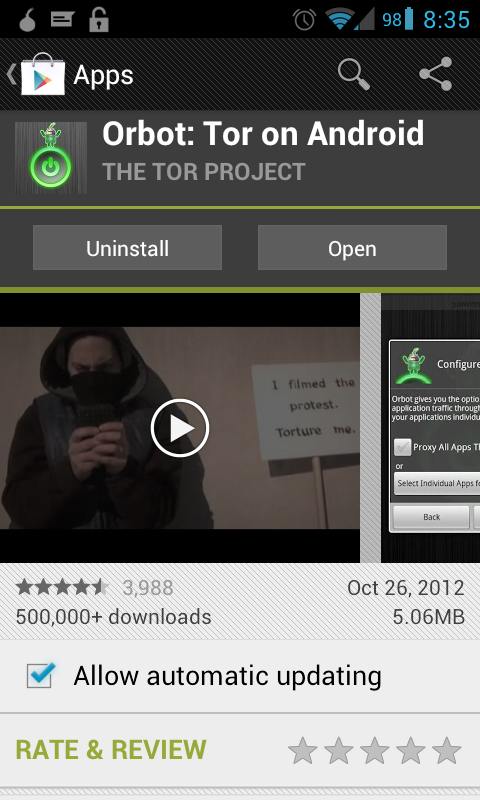
When you open Orbot for the first time you’ll see a series of pages. Choose your language and click next until you get to the Permissions page.
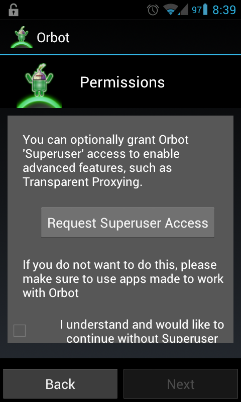
If you don’t have a rooted phone, that’s fine. You just won’t be able to proxy your email through Tor, but Twitter, and IM, and other apps that were designed to work with Orbot will work fine.
If you do have a rooted phone, go ahead and Request Superuser Access.
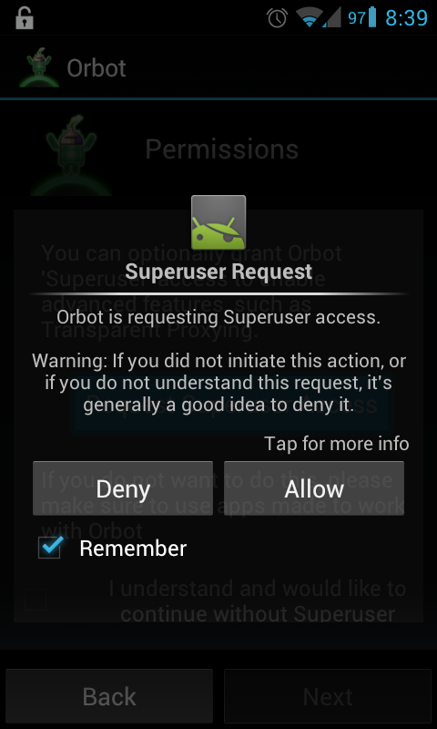
If you have given Orbot root access, the next page should be Transparent Proxying. This is one of the coolest features of Orbot. You get to choose which apps on your phone get all of their traffic proxied through Tor, even if those apps don’t support proxy servers.
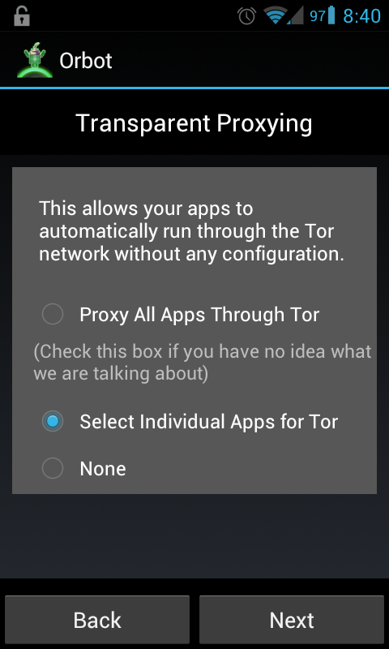
You can also choose to proxy all apps through Tor if you want, but keep in mind that everything on your phone will be really, really slow if you do this. Also, you might not want to. Some apps (most apps?) still communicate with their servers over HTTP rather than HTTPS, and when you’re using Tor the exit node can sniff your traffic. Proxying insecure apps over Tor might be a security issue. See Tor and HTTPS to understand exactly how Tor and HTTPS work together.
Go ahead and click “Select Individual Apps for Tor”. A list of all of the apps installed on your system should pop up, with check boxes next to them. You can proxy whatever you want through Tor, but I’m just doing my Email app.
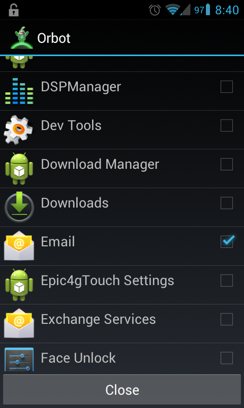
Next, Orbot will show you a list of apps that have been designed to work with Tor. This list includes Gibberbot and Twitter (more about them below), as well as other apps like DuckDuckGo and Firefox.
Click through until you get to the giant button with the pretty background, and start Tor.
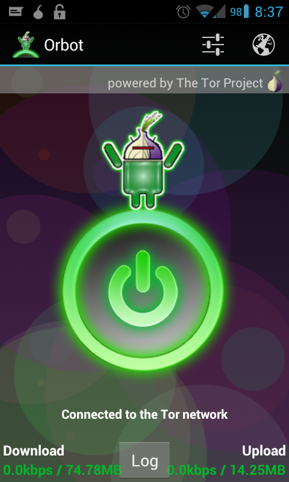
If you want to change any Tor settings, including the list of apps that you transparently proxy, you can click the settings button on the right side of the top bar.
More About Proxying Email Through Tor
As far as I know, there aren’t any email apps for Android that natively support proxy servers. K-9 Mail, the major free software Android email client, will hopefully implement this soon. There’s a K-9 Google Summer of Code project idea for it, as well as an open bug in their bug tracker. But until that happens, you can only tunnel your email traffic through Tor if you’ve rooted your phone.
Proxying your email is sometimes especially important, depending on your mail server configuration. Some mail servers leak your IP address in the SMTP headers of outbound emails, which means, for example, if you write an email to a public mailing list from your phone, it’s not just your mail server, your ISP, and your government who might learn your IP address. It’s anyone who is subscribed to that mailing list, or is able to download mailing list archives with headers intact.
Tunnel Twitter Through Tor
Twitter has built-in support for proxy servers. Just open up the Twitter app, press the menu button on your phone.
Open Settings.
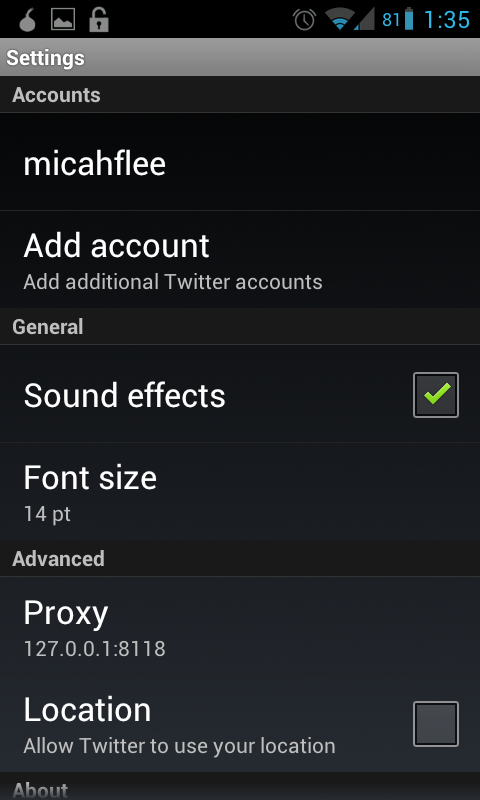
Under advanced, click Proxy and set your proxy settings like this:
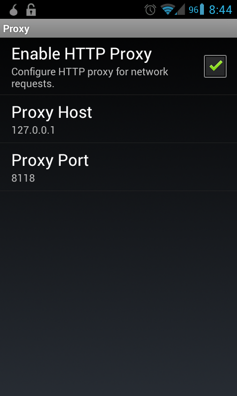
While you’re in your Twitter settings, make sure “Location: Allow Twitter to use your location” in unchecked, or you’re somewhat defeating the purpose :).
I find that for Twitter, as well as email, proxying through Tor isn’t too slow at all since it’s only sort of real-time. The one exception I’ve noticed is if you’re using a crappy 3G connection and trying to tweet a photograph over Tor. Last time I tried this, it failed each time and I just gave up until I found wifi.
Tunnel Instant Messenger Through Tor, Plus Off-the-Record
Gibberbot is an Android jabber client that has been specifically designed to work with Orbot. And, more excitingly, it’s has Off-the-Record (OTR) end-to-end encryption built-in. This means that you if you’re chatting with other people who use OTR, the contents of your chats are encrypted so that even your chat server can’t see what you’re saying. Of course, you’ll need to verify identities before you can be sure you’re chat conversion is secure.
Other chat clients that support OTR are: Pidgin for Windows and Linux, Adium for Mac OS X, and ChatSecure for iOS.
Gibberbot is an jabber client, which means that it will work with Google Talk or other jabber services that you can create free accounts on, such as jabber.org or jabber.ccc.de. Start by downloading Gibberbot from Google Play.
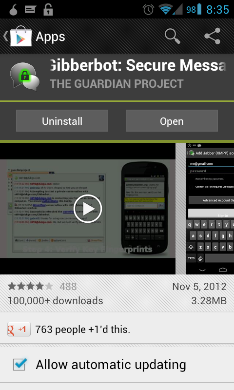
The first time you open it it will ask your language and then there will be several screens of information. If you’ve never used OTR before, it’s definitely worth a read.
It’s really easy to use Gibberbot over Tor. When you’re adding a new chat account, there’s a “Connect via Tor (Requires Orbot app)” checkbox. Just check that box, and then enter your jabber credentials (such as your Google account username and password), and your connections to your chat server will be proxied through Tor.
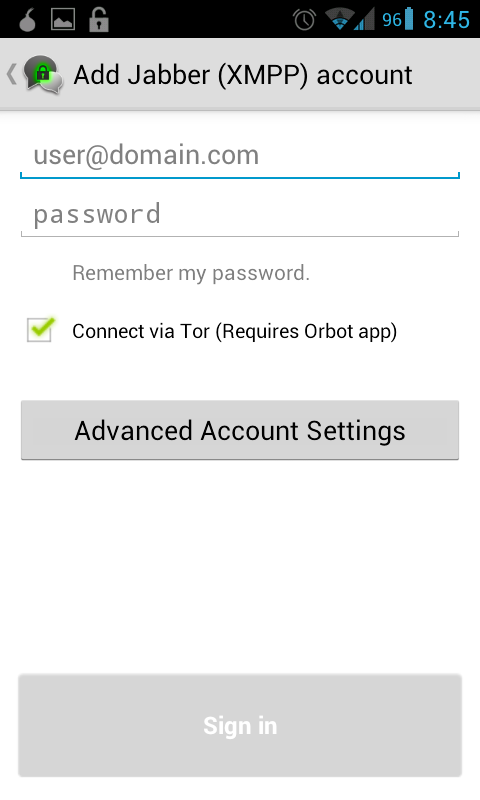
If you do use Google Talk, you might run into trouble with Google rejecting your connection. Google does all sorts of security stuff to prevent your account from getting hacked. If you’ve never logged in to your account from a Tor exit node, it might automatically block the connection until you login to your Google account on a computer and take steps to specifically allow it. This shouldn’t be a problem with other jabber services. If you use another jabber service, such as jabber.org, you will still be able to chat with people who use Google Talk.
Browse the Web Through Tor
In case you want to manually browse the web through to Tor to protect your identity rather than just your location, that’s easy too. Download the Orweb app from Google Play.
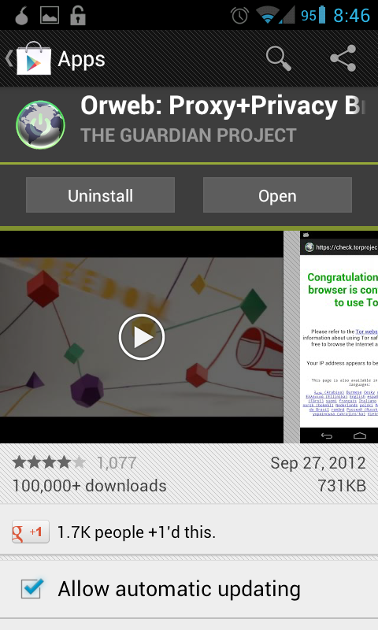
If Orbot is running in the background and you have an active connection to the Tor network, all you have to do to browse the web anonymously from your phone is use Orweb.
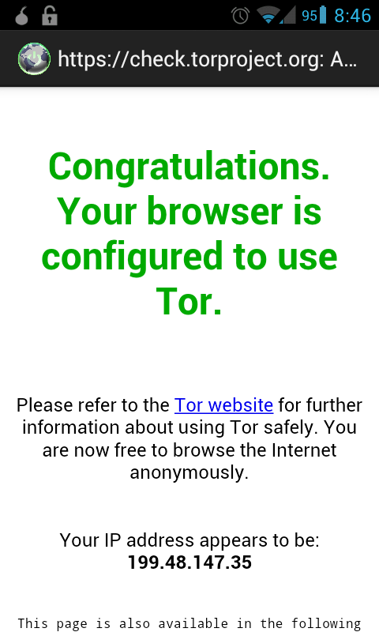


Legacy comments, imported from previous version of this blog:
Etienne
February 2, 2013 10:28 PM
I've been doing this for a while for all applications on which latency doesn't matter much (i.e. pretty much all of them except YouTube and web browsers). I really wish it had a "proxy everything except these applications" approach instead of "proxy only these applications" approach, or an option to toggle between the two, like AFWall+ and friends have. It would make things much easier.
I also wish these settings were applied before any application can be launched (or better, before any network traffic occurs at all). The way it currently is, if you launch an application before ORBot finishes connecting, you can go straight through. But then again the same problem exists with firewall applications; it still gives some time for Android to phone home before the firewall rules are enforced.
brightonbob
February 1, 2013 01:17 PM
Hi Thanks for good helpful article - one possible omission: Twitter section says: Twitter has built-in support for proxy servers. Just open up the Twitter app, press the menu button and click Settings, and under advanced click Proxy. Set your proxy settings like this:
But no Twitter graphic or text settings?
micah
February 1, 2013 02:08 PM
Sorry that was unclear. I just added more screenshots specifically of the Twitter app. Does that help?
developing iphone apps
October 11, 2013 03:33 AM
hey there and thank you for your info – I have certainly picked up something new from right here. I did however expertise a few technical issues using this web site, since I experienced to reload the web site many times previous to I could get it to load properly. I had been wondering if your web host is OK? Not that I'm complaining, but sluggish loading instances times will very frequently affect your placement in google and can damage your quality score if ads and marketing with Adwords. Well I am adding this RSS to my e-mail and could look out for much more of your respective exciting content. Ensure that you update this again very soon.